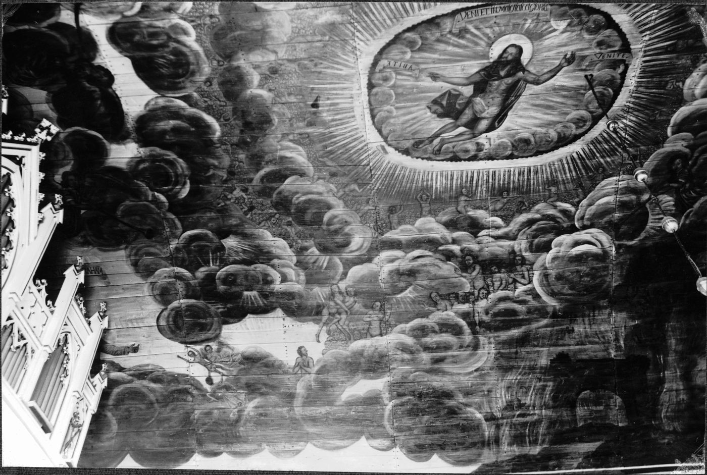
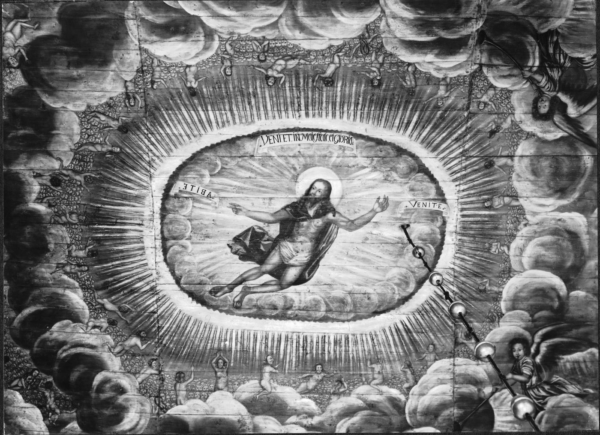

Tvättade man verkligen kyrktaket med bröd?
Så berättades det i skolan förr. Med ljust bröd, en barkis! Vi blev detektiver igen och letade efter bevis.


Kungälvs kyrka är byggd av trä. Den är nästan 350 år gammal.
Hela taket är en enda stor målning. Där finns änglar och moln, en djävul med eldsprutande drakar och en stad som brinner.
Mästaren hette Erik Grijs. En gesäll är en som har lärt sig yrket men ännu inte är mästare.
Sot och damm stiger uppåt och fastnar i taket. Sot kommer från sådant som brinner, som levande ljus.
År 1880 var taket smutsigt och nersotat. Då gjorde en målare som hette Wallström rent det.
Den som tvättar en gammal målning måste vara väldigt försiktig. Annars kan färgen följa med.
Ja, det kan man! Mjukt bröd fungerar som ett suddgummi. Smutsen fastnar i brödet.
En konservator är en som lagar och tvättar gamla målningar. En konservator har berättat att man suddade väggarna i en kyrka i Uppsala med vanligt bröd år 1954.
Frågan är: gjorde man så i Kungälv också?
En detektiv vill veta två saker. Vad säger ledtråden? Och hur vet den det?
Omkring 1970 berättades det i skolan i Kungälv att taket i Kungälvs kyrka tvättades med ljust bröd.
Men ingen har skrivit upp vem som berättade det först.
Där suddade man väggarna med vanligt bröd. Så sättet att tvätta fanns på riktigt.
Men det var en annan kyrka. Där sitter målningarna på väggar av sten och kalk. Taket i Kungälv är av trä.
Där använde konservatorerna en deg i stället för bröd. Den knådas av vetemjöl, vatten, soda och kopparsulfat. Sedan suddar man med den.
Den degen ska man inte äta!
Det året gjordes taket rent. Konservatorn hette Sven Gustafsson och kom från Göteborg.
Någon fotograferade taket före och efter. Två av de bilderna ser du högst upp på sidan.
Men varken bilderna eller texterna vi har läst berättar vad han tvättade med.
Just när berättelsen gick i skolan arbetade en konservator i kyrkan. Han hette Thorbjörn Engblad.
Han målade en rad små vita prickar vid det han själv hade målat, och skrev årtalet 1970. Då kan alla se vad som är nytt och vad som är gammalt.
Men ingen text säger att han tvättade taket.
Då tvättades taket senast. Först med mjuk pensel och dammsugare. Sedan suddade de med en särskild suddsvamp, bräda för bräda.
Tre målade taket. Tre tvättade det.
Riksarkivet har lärt en dator att läsa gammal handstil. Vi sökte på kyrka och bröd.
Datorn hittade bara människor som för länge sedan dömdes till ”fängelse vid vatten och bröd”. Ingenting om kyrktak.
Kanske.
Att man har suddat målningar i kyrkor med bröd är sant. Det har vi hittat bevis för.
Att man gjorde det just i Kungälvs kyrka har vi inte hittat något bevis för. Vi har inte heller hittat något som säger att det är påhitt.
Berättelsen kan alltså vara sann. Det kan ändras till ett ja eller ett nej om någon hittar rätt papper.
Med brödet följer pyttesmå levande saker som kallas mikroorganismer. De kan fastna i väggen. Då kan det börja mögla.
Därför använder konservatorerna svampar och särskild deg i dag.
Mitt i kyrkan hänger ett stort modellskepp. I botten på skeppet låg en hälsning gömd. Konservatorerna hittade den 2023.
Maria sa att de skulle lägga dit en ny tidning när de var klara.
Församlingen filmade arbetet 2023. Det finns sju korta filmer på Youtube. Tillsammans tar de knappt tjugo minuter.